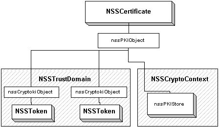

'default',
);
require_once "{$config['file_root']}/includes/header.inc.php"
?>

The diagram to the right shows how objects are structured in Stan. Currently,
the two sources of objects are tokens and crypto contexts. A certificate
is constructed by looking in the trust domain for all tokens containing the
cert. For each token, an nssCryptokiObject is created. This struct
contains the information needed to reference the token's cert instance.
A set of nssCryptokiObjects constitutes an nssPKIObject. Since the
functionality for managing instances of a PKI object is the same for all
types, this code is implemented in a common location, under the object nssPKIObject.
Seepkim.h
and pkibase.c.
Think of it as being OO, and NSSCert, NSSPrivateKey, etc., all
inherit from nssPKIObject.
Here are the structure definitions for the object classes:
struct nssCryptokiObjectStr
{
CK_OBJECT_HANDLE handle;
NSSToken *token;
nssSession *session;
PRBool isTokenObject;
NSSUTF8 *label;
};
struct nssPKIObjectStr
{
/* The arena for all object memory */
NSSArena *arena;
/* Atomically incremented/decremented reference counting */
PRInt32 refCount;
/* lock protects the array of nssCryptokiInstance's of the object */
PZLock *lock;
/* XXX with LRU cache, this cannot be guaranteed up-to-date. It cannot
* be compared against the update level of the trust domain, since it is
* also affected by import/export. Where is this array needed?
*/
nssCryptokiObject **instances;
PRUint32 numInstances;
/* The object must live in a trust domain */
NSSTrustDomain *trustDomain;
/* The object may live in a crypto context */
NSSCryptoContext *cryptoContext;
/* XXX added so temp certs can have nickname, think more ... */
NSSUTF8 *tempName;
};
struct NSSCertStr
{
nssPKIObject object;
...
};
Base
- Public (nssbase.h)
- Fairly simple, applications should be able to create and destroy
NSSArenas, NSSItems, and NSSUTF8s (wrapper for
various strings).
- Obtaining error stacks from
NSS_GetError.
- Internal (base.h)
- The memory management facility is designed to eliminate the occasional
arena/non-arena memory bugs we encountered in the past. This is accomplished
by adding a header to all allocated memory with arena information.
- How should the error space be divided?
- Pointer tracking?
ASN1
- Public (nssasn1.h)
- Same as SEC_ASN1XXX, just uses Stan conventions.
- Internal (asn1.h)
- Wraps old ASN.1 implementation. In order to make this work,
I had to modify the secasn1?.c files to use Stan memory facilities. Might
have to live with conditional compiles for a while.
Dev
- Public (nssdev.h)
- Should be able to access information about devices. Instead
of a plethora of accessors (
NSSToken_GetName, NSSToken_GetIsRemovable,
...), I would prefer to have publicly available types with a complete set
of information about the device. This would look like NSSModule_GetInfo,
NSSSlot_GetInfo, and NSSToken_GetInfo.
- NSSAlgNParam - should be able to create from
OID (includes templates for decoding parameters? or does that belong at a
higher level?), and also directly (
NSSAlgNParam_CreateRC2Encryption).
- NSSCallback - handler for high-level slot login
- What else?
- Internal (dev.h,
devm.h)
- NSSModule - load from spec, load from file, find slots, ordering*
- NSSSlot - initialize, login/out, change password, detect
token*
- NSSToken - initialize, import object, find objects*
- key generation
- crypto - digesting*, encryption, signing, random numbers
- low-level object cache for slow tokens*
- nssSession - create and destroy*
- save and restore state
- virtual sessions
- nssCryptokiObject - low-level wrapper around cryptoki objects.
Includes handle, label, id, anything else object-specific and generic*
- nssSlotList - threadsafe list of slots, used by trust domains
PKI
- Public (nsspki.h)
- NSSCert
- delete stored object*
- build chain, verify
- crypto routines - encrypt, verify, wrap
- create crypto context
- get public/private key
- obtain trust information - should be
NSSCert_GetIsTrustedForXXX
(trust objects not publicly available)
- relationship to NSSUserCert
- relationship to NSSPKIXCert
- NSSPrivateKey / NSSPublicKey / NSSSymKey
- delete stored object*
- crypto routines - encrypt, decrypt, sign, verify, wrap, unwrap
- create crypto context
- get info about key?
- NSSCRL
- delete stored object
- find certificate in CRL
- NSSTrustDomain
- multiple trust domains
- selecting modules/slots to initialize with, enable/disable tokens
- import objects (certs, CRL's, keys) - always have destination
token?
- find objects*
- key generation (parameters for fallback to other tokens)
- create crypto context for algorithm
- NSSCryptoContext
- import objects*
- find objects*
- generate keys
- crypto operations - need to be clear on how "distinguished" objects
are used
- NSSUsage
- bitmask or OID? The problem with OIDs is that many extensions
mean the same thing (nsCertType and keyUsage).
- NSSTime
- separate type, or wraps PRTime?
- NSSPolicies
- NSSSMIMEProfile
- Internal (pki.h,
pkim.h)
- NSSCert
- NSSTrustDomain
- certificate cache
- use local slot list*
- find token for algorithm, get session for token
- NSSCryptoContext
- nssTrust - separate object, or property of cert? What
trust values are defined? I have some notes.
- nssPKIObject - base from which all PKI objects inherit. Implements
common functionality like deletion and managing multiple token instances.*
- nssPKIObjectCollection - a set of above, used when traversing
tokens to locate objects. Sorts multiple instances together, separates
objects.
PKI1
- Public (nsspki1.h)
- PKIX part-1 types, NSSOID (including OID table), NSSATAV,
NSSRDN, etc.*
- Internal (pki1.h)
- relationship between NSSOID and NSSAlgNParam
- decode the OID at this level (note the OID table has CK_MECHANISMs)?
PKIX
- Public (nsspkix.h)
- All of the RFC 2459 types, and how to move up and down the hierarchy
[e.g.,
NSSPKIXCert_GetTBSCert, NSSPKIXCert_Create(NSSPKIXTBSCert,
...)]*
- How does this hook into the PKI layer? What is the relationship
between NSSPKIXCert and NSSCert? I have
one proposal.
- Internal (pkix.h)
- see my notes on what implementation
there is
SSL and S/MIME
Does the above specification meet the needs of these libraries, at the public
API level? How will the new design of the SSL library look after incorporating
crypto contexts and trust domains, and do we anticipate this to be an improvement
(in terms of performance and flexibility)?